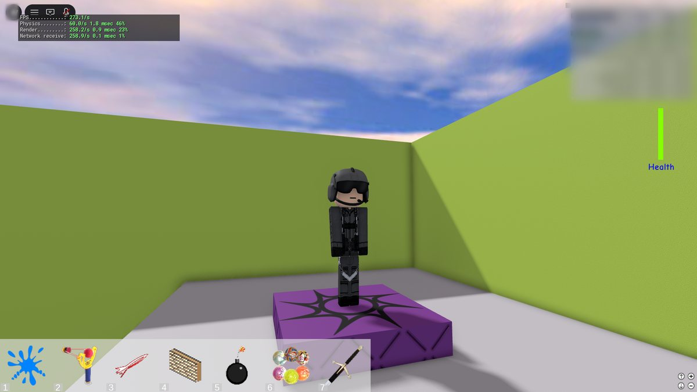
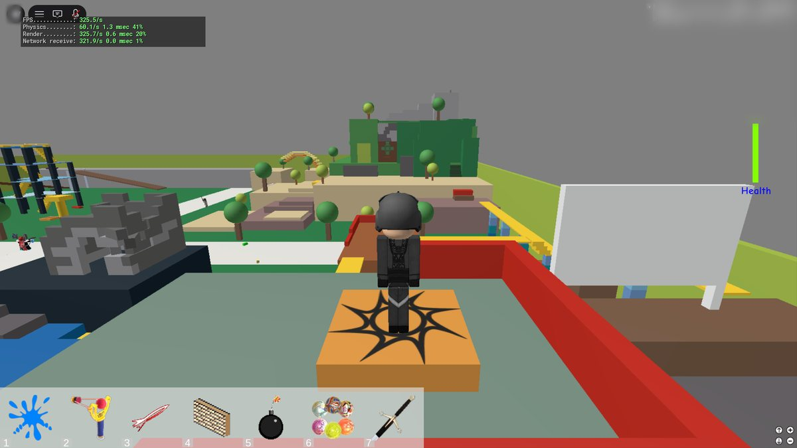
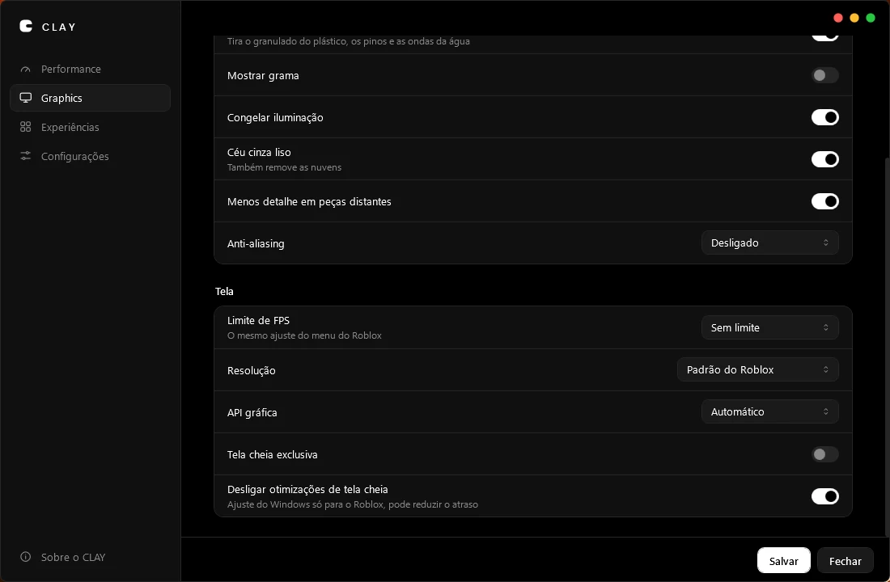

Launcher gratuito para Roblox focado em FPS
Ligue o Modo Massinha: gráfico liso como massinha de modelar e FPS no máximo, usando apenas configurações oficiais do Roblox.

01Antes e depois
FPS de verdade, medido no jogo.
Gráfico padrão contra o Modo Massinha no mesmo servidor, e o máximo que tiramos num mapa vazio. O número é o contador de FPS do próprio Roblox (Shift+F5).



Medido em um PC com Ryzen 5 4600G, RTX 5060 e 16 GB, em 1080p. Servidor cheio: Crossroads. Mapa vazio: Baseplate. O resultado varia conforme o processador, a placa de vídeo e o jogo.
02Recursos
Tudo que pesa, desligado em um clique.
E o resto que um launcher precisa ter, sem telas poluídas.
Desempenho
-
Modo MassinhaTexturas lisas, sem grama, céu cinza e qualidade mínima. Um interruptor só.
-
Perfis de desempenhoPC Fraco, Equilibrado, Máximo FPS e Massinha. O CLAY detecta seu hardware e recomenda um.
-
FPS sem limiteUsa a configuração oficial de limite de FPS do Roblox, a mesma do menu do jogo.
-
Texturas lisasTira o granulado do plástico, os pinos e as ondas da água.
-
Céu cinza sem nuvensCéu liso e nuvens zeradas: menos coisa para desenhar a cada quadro.
-
Menos input lagTela cheia exclusiva e otimizações de tela cheia do Windows desligadas só para o Roblox.
-
Prioridade alta pela bandejaO CLAY fica na bandeja e mantém o Roblox em prioridade alta, usando a GPU de alto desempenho.
Experiências e servidores
-
Favoritas e atalhosAbra suas experiências direto pelo CLAY e crie atalhos na área de trabalho.
-
Navegador de servidoresVeja os servidores públicos, do mais cheio ao mais vazio, e entre no que quiser.
-
Local do servidorUm aviso discreto diz onde fica o servidor em que você entrou.
-
Discord Rich PresenceMostra no seu perfil do Discord o que você está jogando e há quanto tempo.
Extras
-
Mods cosméticosCursor, fonte e som personalizados, com backup e restauração.
-
LimpadorApaga logs antigos e arquivos temporários do Roblox e mostra quanto espaço liberou.
Perfis
- PC FracoEstável em computadores modestos
- EquilibradoMais FPS sem perder nitidez
- Máximo FPSQualidade mínima, texturas legíveis
- MassinhaTudo no mínimo: liso, sem grama, céu cinza
03O app
Poucas telas. Cada uma com um motivo.



04Segurança
É seguro?
O CLAY só mexe no que o Roblox deixa mexer. O que ele faz e o que ele não faz:
O Roblox afirmou publicamente que launchers que não modificam o binário do cliente não são afetados pelas suas medidas contra modificações. Ainda assim, nenhum programa de terceiros vem com garantia: as regras do Roblox podem mudar.
-
Só configurações oficiaisUsa apenas Fast Flags da lista permitida pelo Roblox e as opções do próprio jogo.
-
Não modifica o jogoNão altera o executável nem a memória do Roblox. Nada de injeção.
-
Uma instância sóSem multi-instância, sem anti-AFK, sem reentrada automática.
-
Não guarda seu loginNenhum cookie da sua conta é armazenado pelo CLAY.
-
Sem vantagem em jogoNão remove neblina nem paredes. O Modo Massinha muda só o visual.
05Instalação
Pronto em um minuto.
-
Baixe o instalador
O arquivo
Baixar CLAYCLAY-win-Setup.exe, sempre por este site.Verificar integridade (opcional)Para ter certeza de que o arquivo é o oficial e não foi alterado, compare o SHA-256 dele com o publicado neste site para CLAY-win-Setup.exe:
. Todos os arquivos oficiais estão em checksums.txt.Na pasta do download, clique com o botão direito num espaço vazio, escolha Abrir no Terminal e digite
Get-FileHash .\CLAY-win-Setup.exe. Esse comando só lê o arquivo e é opcional. Se o resultado for diferente do publicado aqui, apague o arquivo sem abrir. -
Passe pelo aviso do Windows
Se aparecer “O Windows protegeu o computador”, clique em Mais informações e depois em Executar assim mesmo.
O aviso do SmartScreen aparece porque o CLAY ainda não tem assinatura digital e é um programa novo.
-
Instale
Siga o instalador. O CLAY aparece no menu Iniciar.
-
Jogue
Abra o CLAY, ligue o Modo Massinha e clique em Iniciar Roblox.
06Dúvidas
Perguntas frequentes
Posso ser banido por usar o CLAY?
O CLAY usa só o que o Roblox permite: Fast Flags da lista oficial e configurações do próprio jogo. Ele não altera o executável nem a memória, e o Roblox disse que launchers que não modificam o cliente não são afetados. Não existe garantia absoluta para nenhum programa de terceiros, mas o CLAY foi feito para ficar dentro das regras.
Aumenta o FPS em qualquer PC?
Não dá para prometer isso. O ganho depende principalmente do processador, e também da placa de vídeo e do jogo. Em PCs em que o gráfico é o gargalo, a diferença costuma ser maior; se o processador já está no limite, cortar gráficos ajuda menos. Na nossa captura foi de 273 para 325 FPS num servidor cheio, e chegou a 710 FPS num mapa vazio; no seu PC pode ser mais ou menos.
Funciona junto com o Bloxstrap?
Os dois podem ficar instalados, mas use um de cada vez para abrir o Roblox. Ambos gravam configurações do Roblox, então o último a abrir o jogo é o que vale.
Como desfaço tudo?
Em Configurações → Performance, clique em Restaurar padrões. Os ajustes voltam ao normal e os mods cosméticos são restaurados a partir do backup. Para remover o CLAY, restaure os padrões e depois desinstale pelo Windows em Configurações → Aplicativos.
Por que o Windows avisa ao abrir o instalador?
O SmartScreen avisa sobre programas novos e sem assinatura digital. Clique em Mais informações → Executar assim mesmo. Isso só vale para o arquivo baixado deste site.
É grátis mesmo?
Sim. Sem anúncios e sem versão paga.
07Novidades
Changelog
-
1.0.0
Primeira versão pública.